La memoria del crimen: extracción de evidencia de un volcado RAM
Objetivo
- Familiarizar con la herramienta Volatility para el análisis forense de memoria volátil.
- Desarrollar habilidades prácticas en la identificación y extracción de evidencia digital dentro de un volcado de memoria RAM.
- Comprender la importancia del análisis de memoria volátil en investigaciones de cibercrimen.
- Aplicar los conocimientos adquiridos para resolver un caso práctico y proponer líneas de investigación.
Introducción y contexto del caso
El presente informe detalla el análisis forense digital realizado sobre una muestra de memoria volátil (OtterCTF.vmem) vinculada a una investigación de cibercrimen coordinada por elementos especializados de la FGM. Las hipótesis de inteligencia apuntan a un operador con amplios conocimientos técnicos, autodenominado en foros y canales de Telegram bajo los alias de «Morty» y «Ricky», presuntamente involucrado en ingeniería social, trasiego de estupefacientes, rapto, explotación mediante servidores Lunar y la gestión de una red botnet (SO_Just_M0v3_Socy) orientada a la extorsión y exfiltración multimedia.
Siguiendo una metodología rigurosa basada en el framework Volatility 2.6, se extrajo y correlacionó evidencia crítica para esclarecer el modus operandi, trazar la infraestructura de comando y control (C2) y vincular los hallazgos con las evidencias previas (EV455FGM y EV456FGM) y los reportes de inteligencia de SEDENE (FAF3) y CNDI (TFE).
Información general del análisis
- Evidencia Analizada: Volcado de memoria RAM
OtterCTF.vmem(2,097,152 KB) - Herramienta Principal: Volatility Framework v2.6 (
vol2.exestandalone x64) - Fecha de Análisis: 14/11/2026
- Examinador Asignado: Andrea Morúa Bravo (Matrícula: 185548)
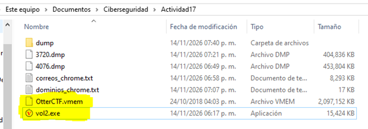
volatility_2.6_win64_standalone y el volcado OtterCTF.vmem.Desarrollo forense y extracción de evidencia
A continuación se documentan los comandos ejecutados, capturas de evidencia y el análisis técnico de cada fase de la investigación:
1. Marca de tiempo local del volcado de memoria
Comando ejecutado: .\vol2.exe -f OtterCTF.vmem imageinfo
- Image date and time (UTC):
2018-08-04 19:34:22 UTC+0000 - Image local date and time:
2018-08-04 22:34:22 +0300
Análisis: Se identificó la marca de tiempo local del sistema en el momento de la adquisición fijada en 2018-08-04 22:34:22 +0300, con una diferencia horaria de UTC+03:00 respecto al tiempo universal coordinado. Este desfase temporal es un indicador crítico para alinear cronológicamente los eventos registrados en el equipo con los accesos externos, bitácoras de red y transacciones financieras del sospechoso.
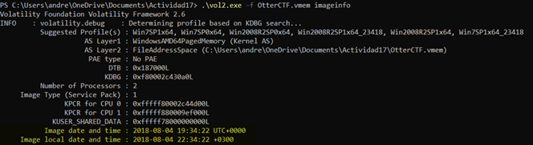
imageinfo.2. Sistema Operativo y arquitectura utilizados
Comando ejecutado: .\vol2.exe -f OtterCTF.vmem imageinfo
- Perfil sugerido principal:
Win7SP1x64(Microsoft Windows 7 Service Pack 1 de 64 bits). - Capa de Dirección de Espacio (AS Layer 1):
WindowsAMD64Paged Memory, confirmando la arquitectura de 64 bits (AMD64/Intel 64). - Tipo PAE:
No PAE, operando de forma nativa en espacio de direcciones de 64 bits. - Número de Procesadores:
2núcleos asignados durante la adquisición forense.
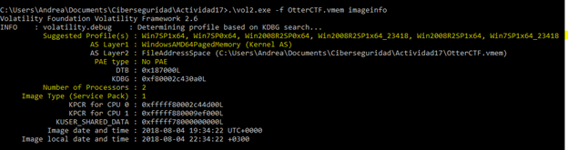
3. Credenciales y contraseña del perfil del cibercriminal
Comandos ejecutados:
.\vol2.exe -f OtterCTF.vmem --profile Win7SP1x64 hashdump
.\vol2.exe -f OtterCTF.vmem --profile Win7SP1x64 lsadump
- Usuario activo (RID 1000):
Rick - Hash NTLM extraído:
518172d012f97d3a8fcc089615283940 - Contraseña descifrada (DefaultPassword):
MortyIsReallyAnOtter
Al profundizar en la memoria caché de autenticación y las estructuras LSA/DPAPI mediante lsadump, se obtuvo en texto claro la contraseña MortyIsReallyAnOtter, confirmando los vínculos directos con los alias detectados en fuentes abiertas y redes sociales.
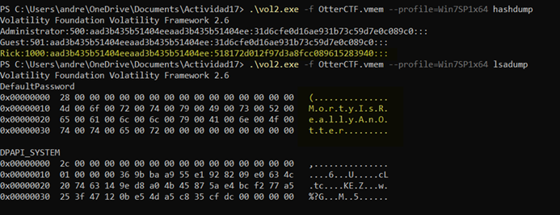
Rick mediante hashdump y lsadump.4. Direccionamiento IP utilizado en la actividad maliciosa
Comando ejecutado: .\vol2.exe -f OtterCTF.vmem --profile Win7SP1x64 netscan
- Dirección IP local del equipo:
192.168.202.131(puerto origen49530) - Dirección IP remota / atacante:
77.102.199.102:7575(TCPv4, asociada aLunarMS.execon PID708)
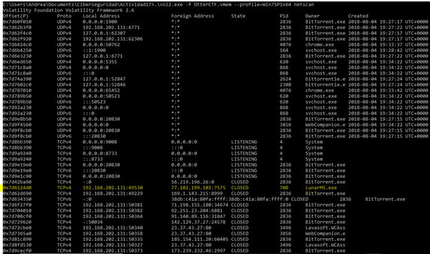
netscan.5. Llaves del Registro del Sistema disponibles
Comando ejecutado: .\vol2.exe -f OtterCTF.vmem --profile Win7SP1x64 hivelist
Se extrajeron las direcciones virtuales y físicas en memoria RAM de las colmenas fundamentales del registro: \REGISTRY\MACHINE\SYSTEM, \REGISTRY\MACHINE\HARDWARE, \SystemRoot\System32\Config\SECURITY, \SystemRoot\System32\Config\SOFTWARE, \SystemRoot\System32\Config\SAM y el perfil del usuario \??\C:\Users\Rick\ntuser.dat.
¿Por qué es de utilidad conocer el Registro del Sistema del dispositivo comprometido?
Funciona como una bitácora persistente de la actividad del equipo y del comportamiento del atacante. Permite reconstruir mecanismos de persistencia (claves de ejecución automática), auditar cuentas de usuario creadas o modificadas en la colmena SAM, y revisar configuraciones de red, historial de dispositivos USB y políticas de seguridad para trazar el alcance exacto de la intrusión.
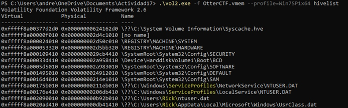
hivelist.6. Nombre del ordenador del cibercriminal
Comando ejecutado: .\vol2.exe -f OtterCTF.vmem --profile Win7SP1x64 printkey -K "ControlSet001\Control\ComputerName\ComputerName"
- Nombre del ordenador (ComputerName):
WIN-LO6FAF3DTFE
Este hallazgo resulta determinante para la investigación, ya que la cadena alfanumérica contiene exactamente las siglas FAF3 y TFE, coincidiendo con los reportes de inteligencia proporcionados por SEDENE y CNDI sobre la infraestructura de servidores Lunar.
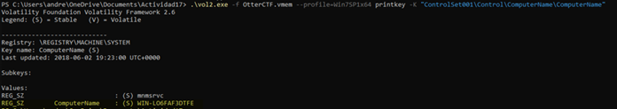
ComputerName con el plugin printkey.7. Tres procesos relevantes iniciados durante el incidente
Comando ejecutado: .\vol2.exe -f OtterCTF.vmem --profile Win7SP1x64 pslist
-
Proceso A —
LunarMS.exe(PID 708): Núcleo de la amenaza y cliente personalizado troyanizado que mantiene enlace directo con la IP externa del servidor malicioso (77.102.199.102:7575). -
Proceso B —
BitTorrent.exe(PID 2836): Herramienta de transferencia P2P con múltiples conexiones internacionales utilizada para el intercambio masivo de datos, distribución de cargas útiles y exfiltración/envío de material multimedia de las víctimas. -
Proceso C —
Rick And Morty(PID 3820): Proceso con nomenclatura anómala ejecutado desde el entorno gráfico (explorer.exe) vinculado a la ejecución de scripts maliciosos y tareas automatizadas del operador (proceso padre de3720).
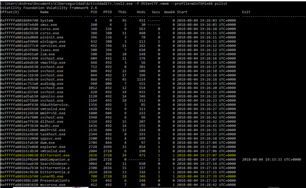
pslist.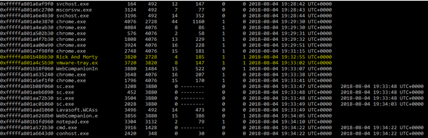
pslist.8. Geolocalización del servidor malicioso
Comando ejecutado: .\vol2.exe -f OtterCTF.vmem --profile Win7SP1x64 netscan
- Dirección IP del servidor malicioso:
77.102.199.102 - Puerto utilizado:
7575(TCP) - Ubicación geográfica estimada (Geolocation): Londres, Inglaterra, Reino Unido (
51.50853, -0.12574— Distrito Greater London, código postalWC2N). - Proveedor de servicios (ISP / ASN): Virgin Media Limited (
AS5089, dominiovirginmedia.com).
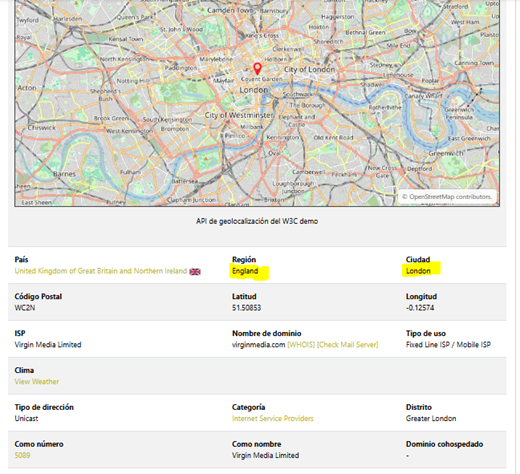
77.102.199.102.9. Correos electrónicos utilizados para ataques de ingeniería social
Comandos ejecutados (volcado del proceso chrome.exe PID 4076):
findstr /R /I "[a-z0-9._-]*@[a-z0-9.-]*\.[a-z][a-z]*" 4076.dmp > correos_chrome.txt
Get-Content .\correos_chrome.txt | Select-String -Pattern "[a-zA-Z0-9._%+-]+@[a-zA-Z0-9.-]+\.[a-zA-Z]{2,}" -AllMatches | ForEach-Object { $_.Matches.Value } | Sort-Object -Unique
- Correos identificados:
rickyrickopicko@mail.comyrickyrickopinky@mail.com
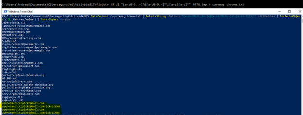
4076.dmp).10. Cartera de criptomoneda para cobro de rescates
Comandos ejecutados (inspección del proceso malicioso PID 3720):
.\vol2.exe -f .\OtterCTF.vmem --profile Win7SP1x64 cmdline -p 3720
.\vol2.exe -f .\OtterCTF.vmem --profile Win7SP1x64 yarascan -p 3720 -W -Y "/[13][a-km-zA-HJ-NP-Z1-9]{25,34}/" > criptomoneda.txt
- Dirección de cartera Bitcoin (BTC):
1MmpEmebJkqXG8nQv4cjJSmxZQFVmFo63M - ¿Se encuentra reportada en listas negras de BTC Black? No. Al contrastarla en
btcblack.it, la dirección no figura actualmente en su listado negro público, aunque en la memoria del proceso se vincula directamente con el esquema de extorsión y recaudación.
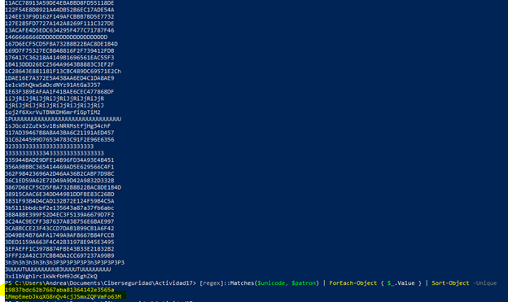
3720.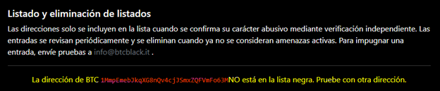
Líneas de investigación recomendadas
- Trazabilidad financiera (Blockchain Forensics): Monitorear en tiempo real las transacciones entrantes y salientes de la dirección
1MmpEmebJkqXG8nQv4cjJSmxZQFVmFo63Mpara identificar nodos de mezcla (mixers) o casas de cambio (exchanges) con políticas KYC, además de reportar la cartera en bases de inteligencia de amenazas. - Cooperación internacional y preservación con ISP: Emitir solicitud de asistencia legal mutua hacia Reino Unido para requerir a Virgin Media Limited (AS5089) los registros de asignación DHCP y bitácoras de conexión de la IP
77.102.199.102en torno al04/08/2018. - Análisis de artefactos P2P y correo electrónico: Extraer los archivos
.torrentcargados en memoria porBitTorrent.exe(PID 2836) para identificar los infohashes y rastrear peers asociados, así como solicitar intervención de los buzonesrickyrickopicko@mail.comyrickyrickopinky@mail.com.
Conclusión
El análisis forense digital practicado sobre el volcado de memoria RAM (OtterCTF.vmem) permitió reconstruir con precisión la estructura técnica, los vectores de ejecución y la infraestructura operativa del presunto cibercriminal, cumpliendo con los estándares metodológicos de preservación y correlación de evidencia volátil. A partir de la ejecución controlada de módulos especializados en Volatility 2.6, se logró perfilar el entorno operativo bajo la arquitectura Windows 7 Service Pack 1 de 64 bits (Win7SP1x64), anclar cronológicamente el incidente mediante la marca de tiempo local (2018-08-04 22:34:22 +0300) e identificar inequívocamente el equipo host bajo el nombre WIN-LO6FAF3DTFE, hallazgo que confirma las hipótesis preliminares de inteligencia al coincidir con las siglas de seguimiento FAF3 y TFE.
Asimismo, la correlación entre los procesos activos en memoria (LunarMS.exe, BitTorrent.exe y Rick And Morty), la recuperación de credenciales del usuario Rick (MortyIsReallyAnOtter), el tráfico de red saliente hacia el servidor ubicado en Londres (77.102.199.102:7575), los correos electrónicos extraídos de la memoria del navegador (rickyrickopicko@mail.com y rickyrickopinky@mail.com) y la dirección Bitcoin identificada (1MmpEmebJkqXG8nQv4cjJSmxZQFVmFo63M) consolidan una cadena de evidencia coherente y verificable para el esclarecimiento del caso.
Documentación de la práctica (PDF)
Puedes consultar el reporte completo de la práctica directamente a continuación o descargarlo en tu dispositivo: